The purpose of this report is to understand the Rube Goldberg Machine submitted by us (Group 1) for the CS 296 course project. The physics of the same can be referred to from the following sources
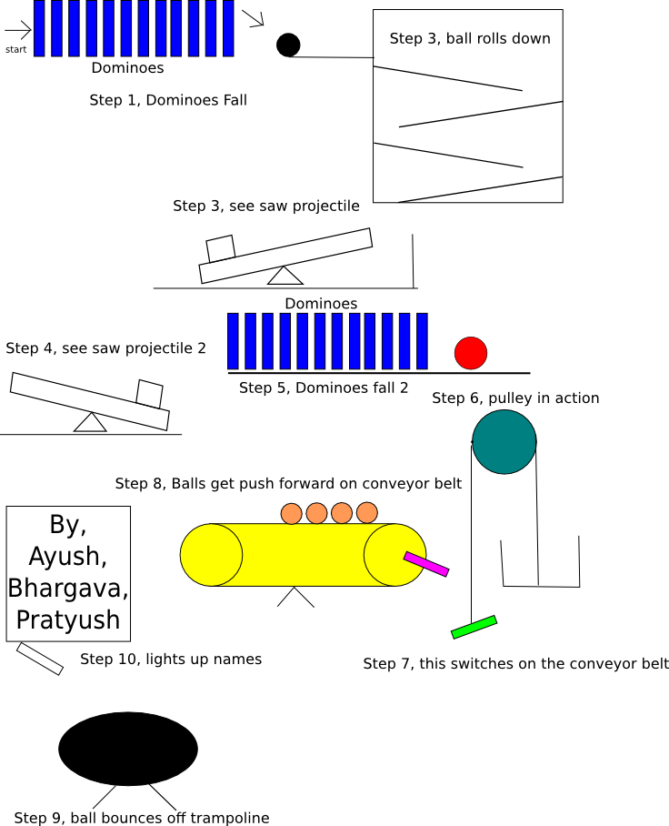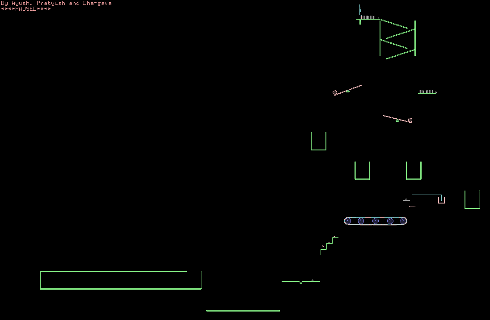The final overall designs and inital proposed design of the machine are attached in this document.
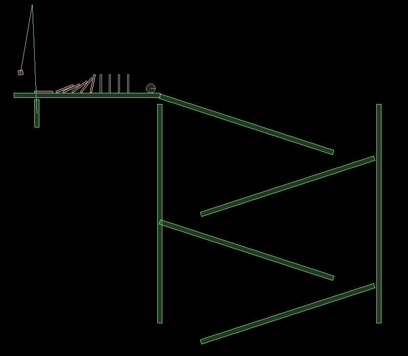
We start the simulation with a pendulum knocking off the dominos. These dominos knock off one another, and as soon as the last domino falls, it pushes a ball onto the slide system that follows.
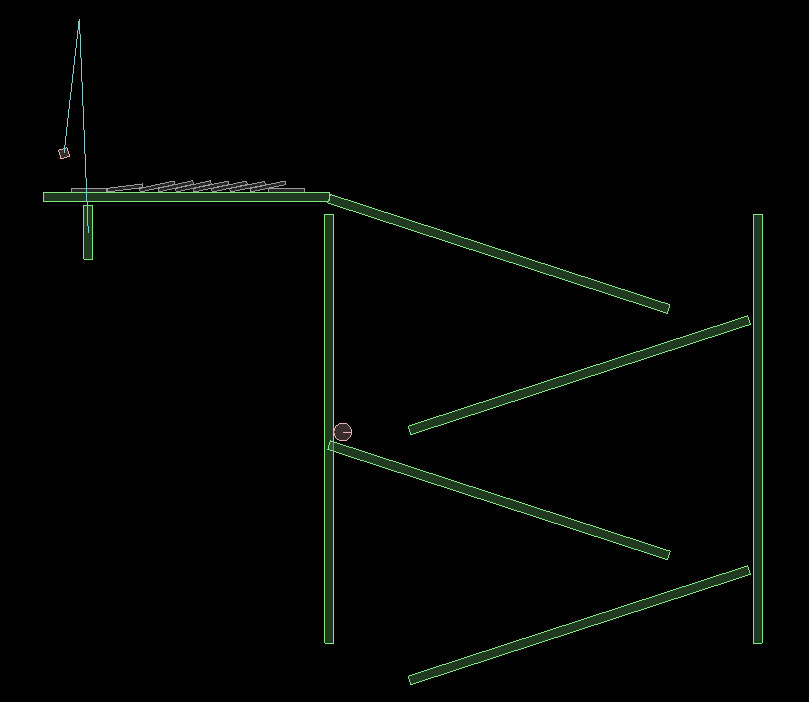The ball knocked off from the dominos enters the slide system from the top. The ball then rolls down the slide system, over the four slopes one after the other. There are two vertical bars towards the left and right ends which prevent the ball from sliding off the slide system.
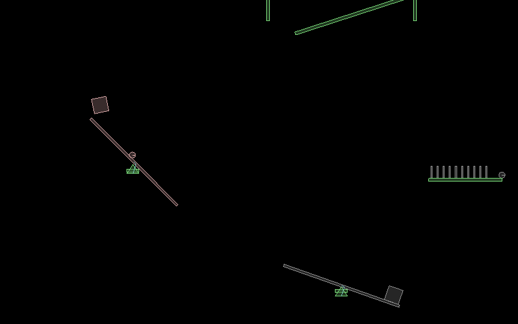The ball now falls off from the slide system and falls on one side of the first seesaw (towards the left). This in turn throws off the rectangular box which rests on the other side of the seesaw
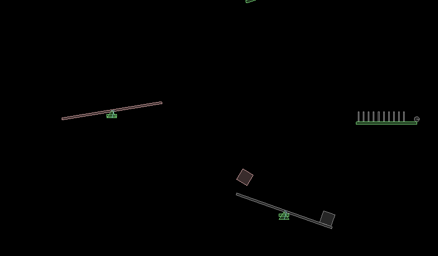The box from the first see saw falls on the second see saw. This pushes the other box on this second see saw towards the second set of dominos.
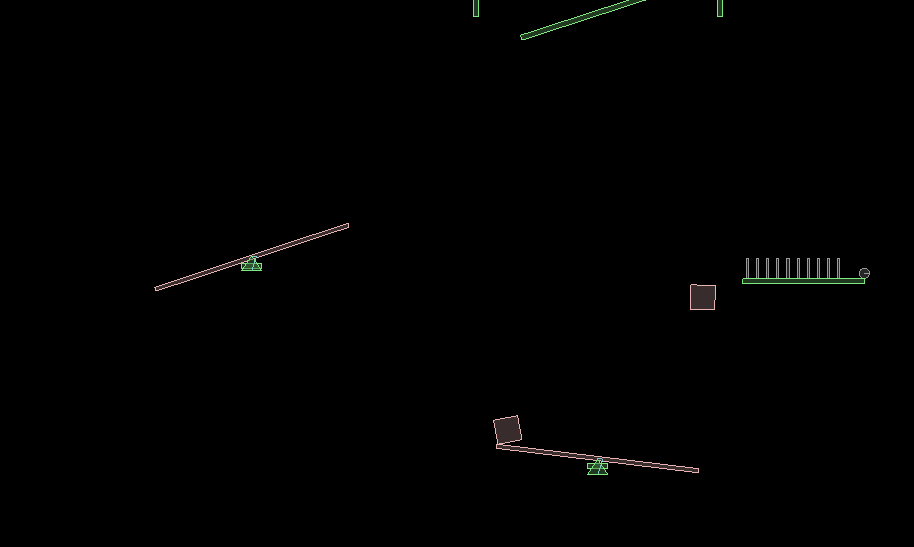The box flying off the second see saw lands on the second set of dominos, and pushes one off. This knocks the other dominos, and at the end, the last falling domino pushes the ball at the end into the container which is held on one arm of the pulley.
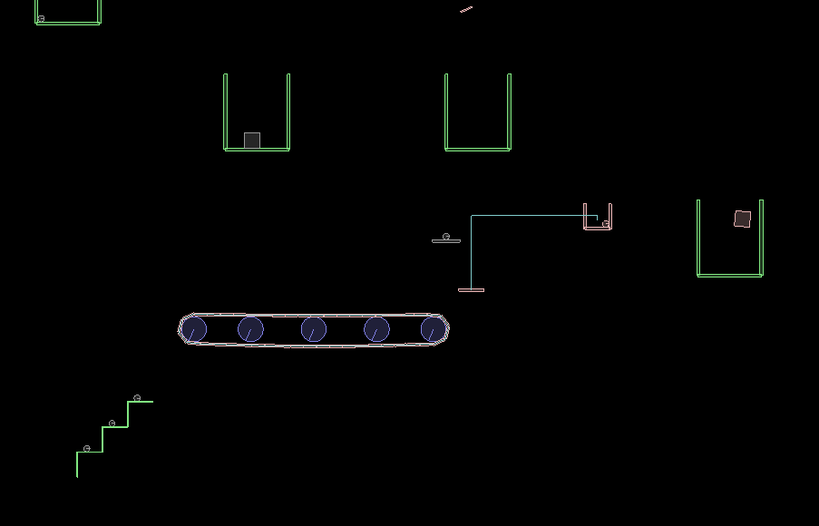The ball falling from the second set of dominos falls into the open container of the pulley's arm. This makes that container heavy, and the other arm of the pulley gets pulled up as a result.
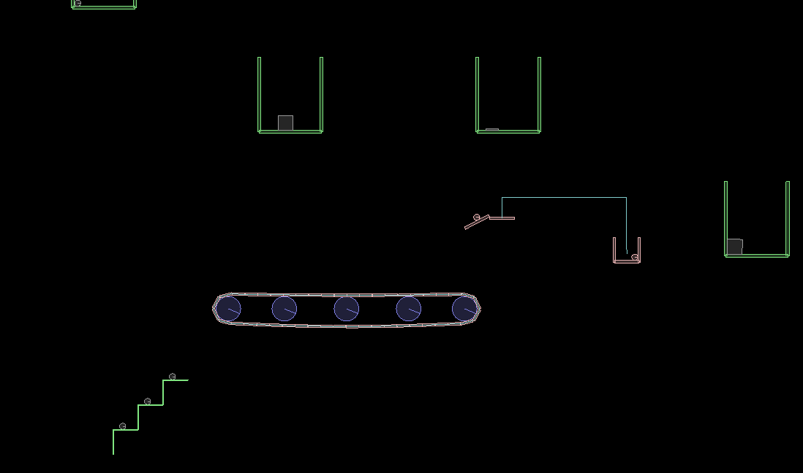The arm from the pulley rotates the floor which as a ball resting on top. As a result, this ball falls off the end of this rotating platform onto the conveyor belt below.
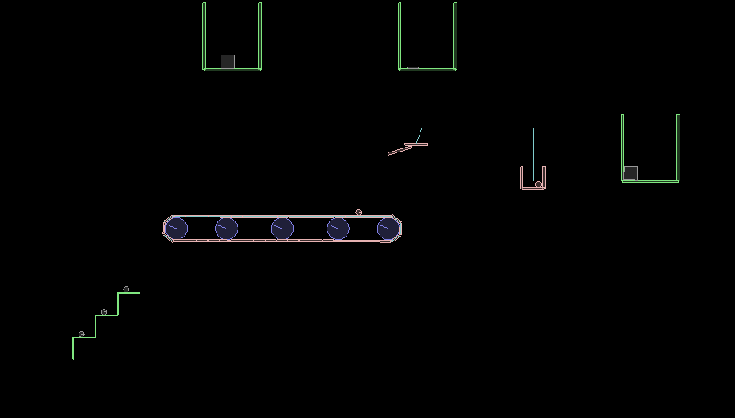The conveyor belt receives the ball from the rotating horizontal platform and transports it to the steps system.
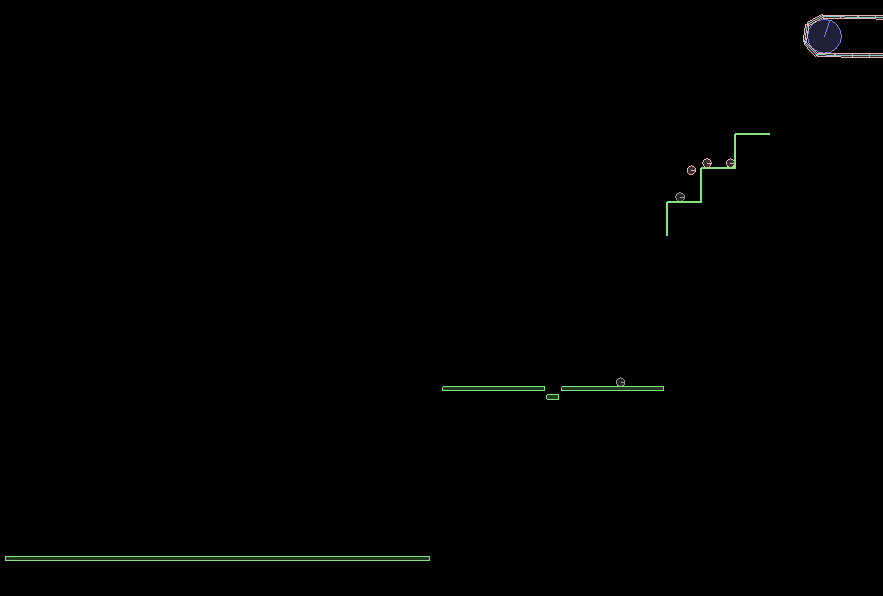This system has three steps with a ball on each step. The incoming ball hits the ball on the first step. These then fall down. At the end of the process, two balls leave the steps system onto the floor system below
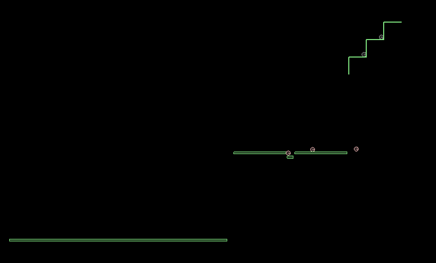One of the balls falling on this system from the steps above rolls over and fills the hole in the floor system here. The other falling ball triggers another ball which is kept here before hand. This ball then rolls over the floor system (over the ball which just plugged in the hole) and onto the trampoline floor below.
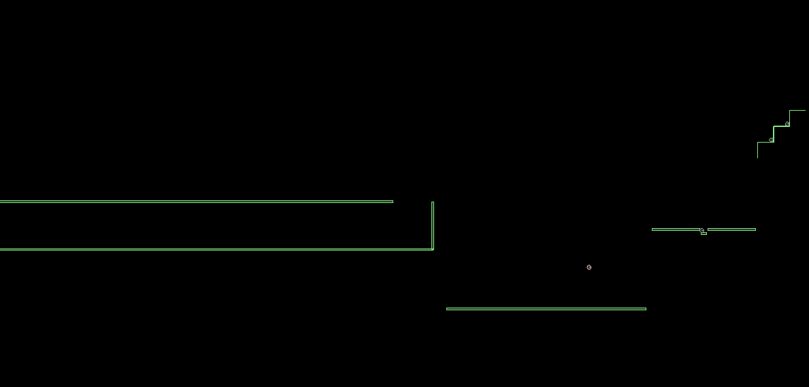The ball from the floor system above falls on the trampoline floor, where it bounces twice.
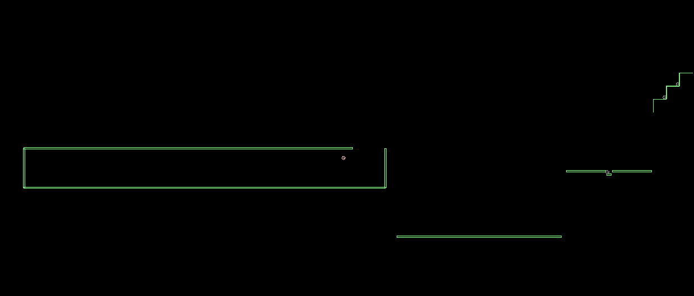The ball from the trampoline floor enters the final box and stays there forever with increasing speed.
Here, we talk, in brief, about what makes our design interesting and unique
For the purposes of this simulation of the Rube Goldberg machine, the two see saws used have an interesting property. The friction between the box kept on the see saw and the see saw itself is extra ordinarily high. It is this exceptionally high friction which makes it possible to start the see saws with such atrocious angles, and make the see saws look more dramatic than they actually are.
This probably, is the best part of our design, by all means. The simulation of a conveyor belt was a pretty interesting and challenging task in Box 2d. There is no "automatic" conveyor belt that Box 2d provides, we needed to make one from first principles. To achieve the same, we first made two chains, with many pieces in each, and then connected the components precisely, using revolute joints. We then used to two links on either side, to connect the upper and lower halves of the chain. When this was done, we introduced five kinematic discs in between the rectangle formed by the chain, and gave them a constant angular velocity. The entire design was perfectly symmetric, so that the "belt" could not fall off the disc system. Now, we introduced very high friction between the disc and belt, so that the belt would move along with the disc. This gives one the impression of an exact conveyor belt. The most challenging part was placing the different elements correctly, along with the anchors for the revolute joints. Once this was achieved, the rest was pretty simple. We would like to mention that we also tried to implement a contact listener callback which would insert a tangential relative velocity between two bodies whenever they came into contact, but that became too complex, and we had to abandon the idea, or otherwise we would have had to change the entire base code for the project
In the new introduction to our design, there has been one interesting change made. A hole has been made in the floor, which must be plugged in by one ball, before another ball can go over that hole (by going over the ball). We came across this idea from a video depicting a highly complex Rube Goldberg Machine.
The final thing of interest in our design is the elastic ball kept on the floor system. We have given this ball a restitution greater than '1', which is what gives this ball its property of being so elastic. When this falls on the ordinary floor to the right of the floor system, it bounces higher than it started. This makes the floor look like trampoline, when really, it is just a floor. Also, it is for this reason that the ball speeds up extraordinarily fast when it enters the final box.
Here, we discuss all the conclusions that have been drawn as a result of the analysis of code timing and relevant plotting.
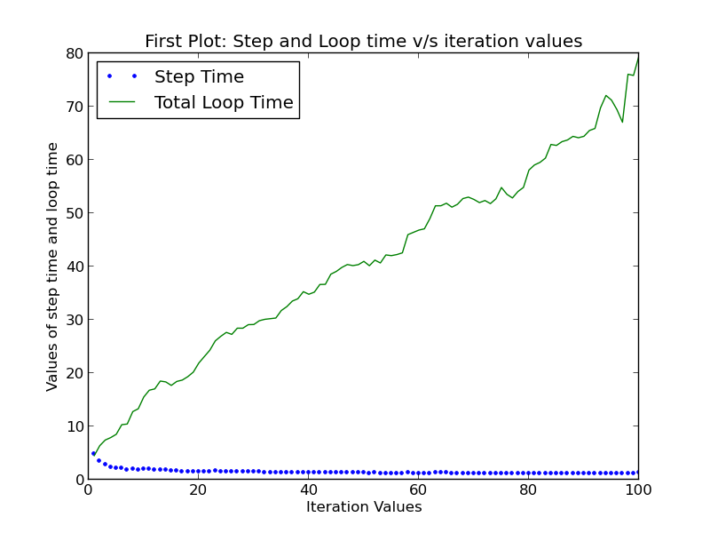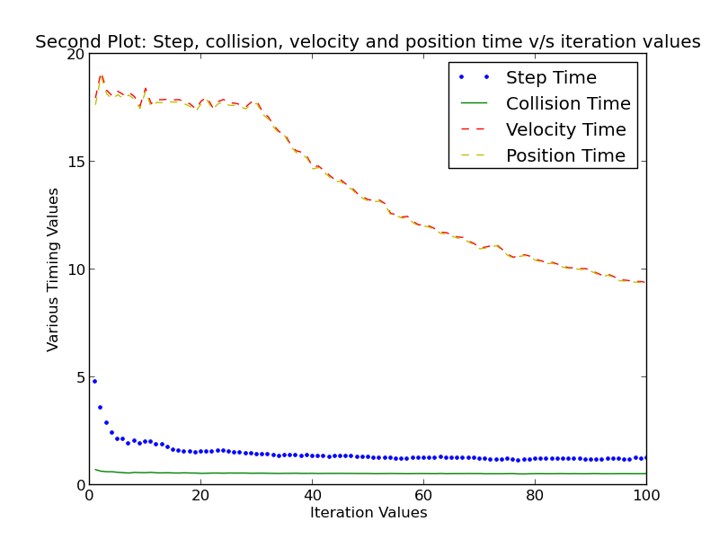On plotting the time plots for the various variables, we come to the conclusion that Average Step time and Average Loop Time are fairly constant over the various number of reruns. The same is true for Average Collision Time as well as Average Velocity and Position Time Updates. However, for the plot v/s different number of iterations, we find that the total loop time increases (which is obvious because the number of iterations is more). But, the average step time, the collision time, the velocity as well as the position update times, all fall with the increase in the number of iterations. Also, we notice that the sum of the collision, velocity, position and step times is just greater than the total loop time. It is almost equal to the total time, just slightly higher. Another important fact to note is that the average velocity and average position times are nearly the same. This is because, now, in our project, we have also included a conveyor belt, which is a fairly velocity "intensive" body. Hence, the velocity iterations turn out to be nearly the same as position iterations. Another thing of importance is that the error are highest with the fewest number of iterations.
The sum of time of the updates can be slightly higher than the total loop time because it is possible that some of these operations overlap. For example, it may happen that step time and position and velocity update operations have some parts in common, and hence their timings are counted in both counters . Another possible explanation for the time variation over iteration values is that when there are fewer iterations, more time is spent in the earlier iterations (a larger fraction of the time that is). Now, since to begin with, we might have a number of initializations taking place, it may be reasonable to assert that all counters and timing operations will take slightly more time. As the number of iterations rises, a lesser fraction of time is spent in the first part of the iteration sequence, and hence, the average time spent in steps, collision, position as well as velocity updates falls. It is for the same reason that the plot for step times vs iteration values also shows a more or less falling curve. However, there is another possible explanation to this. It may be that for the particular animation that we are running, the first part takes more processing for all timing parameter. This is because in the beginning, our Rube Goldberg machine shows falling dominoes, which takes significant time, and then, the machine shows the ball rolling down the slide system, which does not take too much processing time. However, the number of iterations per unit time is fixed, so we may conclude that this is the reason for the extra time taken in the earlier iterations. The step times v/s reruns distribution has an obvious interpretation. For all rerun values, the step time should almost remain constant, which is correctly happening. This is because we can see that most step time values are found bunched near a particular number, and the cumulative frequency curve also shows a jump at exactly around this point. Therefore, this further strengthens the fact the the step times are nearly constant over the various reruns that are conducted. Any variation in the jump (or a not so steep jump) can be attributed to random processor tasks during program execution. The errors being maximum (for the various reruns) for the smallest number of iterations is simply because although the variation in timings for the various computations may be constant, the time taken for fewer iterations itself is least. As a result, the relative error in the timings over the various number of reasons becomes high, which is reflected in the graph with the errorbars.
When other memory intensive applications are runnning, we find that the time taken increases. All other trends do not show much different behaviour, hence we cannot make too many different deductions about them.
The sharpest increase in running time was noticed when other processing intensive applications were run at the same time.
This shows that the process that we are running is processor intensive, and requires a great deal of computation.
Here we discuss code profiling results with Perf. For an instance of such data files, please refer to the dat files in the doc folder of the submission.
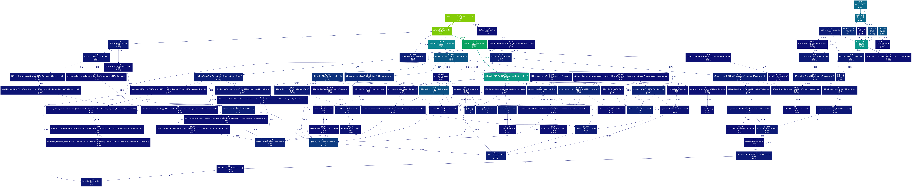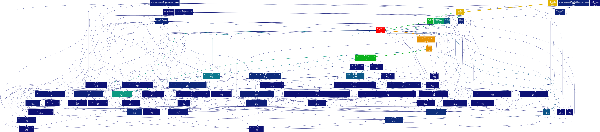In the first part, we compiled Box2D using cmake's Release parameter and used the optimisation flag O3 for compiling and linking the base code. There were a few notable patterns we observed. We collected data for 10, 50, 100, 500, 1000, 5000, 10000 and 50000 iterations. For less number of iterations like 10, 50 or 100, kernel call functions and linking of libraries take a small amount of time. Now, these are those types of overheads which cannot be optimised. However, when we increased the number of iterations further, a clear trend was spotted. The percentage of time the aforementioned processes took kept on increasing from approximately 5\% for 10 iterations to 40\% for 5,00,000 iterations. Then, the function b2RevoluteJoint::SolveVelocityConstraints() was responsible for the most amount of time. It was seen that its percentage was constantly high. It can be said that the kernel calls and library linking take increasing time with more functions. The reasons for the same are not clear. At the same time, we also notice that on some occasions, the function "operator-" of the matrix/vector manipulations class of Box2D takes the most amount of time to run. Hence, this seems to indicate that there is no clear function which dominates in terms of time taken over an increasing number of iterations.
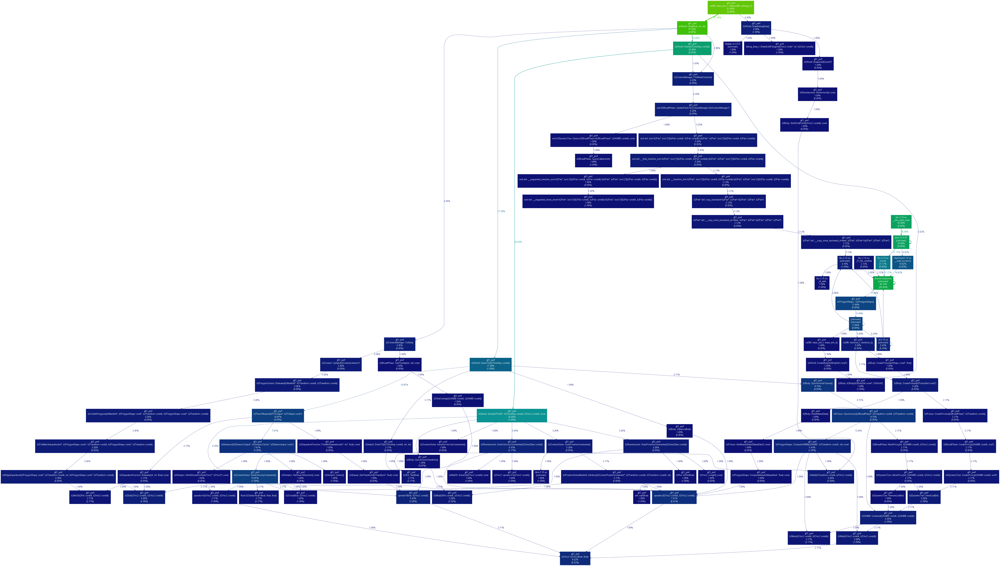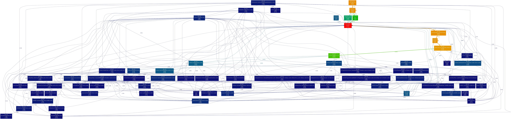In the second part, we compiled Box2D using cmake's Debug parameter and did not use the O3 optimisation flag for compiling and linking the base code. Again, over here, for less number of iterations, kernel call functions and linking of libraries takes less time. However, as we increased the number of iterations, the analysis was pretty much the same for the case with optimizations. The function b2RevoluteJoint::SolveVelocityConstraints() took the most amount of time. However, its proportion of time taken did not increase with the number of iterations, and it also happened, that at times, the function "operator-" of matrix/vector manipulations class of Box2D dominated.
The most processor intensive portion of our code may, in all probability, is the conveyor belt. This has about 20 revolute joints, whose velocity constraints need to be calculated every step, since the belt is constantly in motion. This is probably a very good explanation of the fact that b2RevoluteJoint::SolveVelocityConstraints takes the most amount of time for almost all instances of the number of iterations. Also, the function operator- takes significant time in some occasions, which is probably due to finding out vector differences of velocities of all these revolute joints
After profiling the code with and without optimisations, we found that it is this function which takes more and more time as the number of iterations is increased irrespective of the machine on which it is being run. When we tried to find out optimisations for the same, we were unsuccessful. Apparently, there are no points in the program which can be significantly optimised without knowing in great detail about both Box2D and the g++ optimisation actions. However, we may be wrong. Hence, we were unable to optimise this function any further.
There is one distinct advantage of using the gprof2dot script to make the call graph rather than just the text-only report which perf generates. In the report which perf generates, there is no way to find out how each object is related to another as it is just a table sorted in descending order of the objects with the most overheads. However, the call graph gives a tree of how the functions are related to each other and gives two values for each object - one percentage is how much overhead individually that object alone takes and another which tells you how much overhead it takes along with all the objects under it. This gives a better perspective on how the code is running in some cases. Moreover, a graph is better to parse as it gives a visual representation of everything.
Enabling optimisations in the code solves much of the major problems in optimising code like using inline functions and optimising loops wherever invariants are constant before and after the loop. If there are repeat accesses of say, array variables within a loop, that is optimised by referring it once and storing it in a temporary variable. This saves a lot of function calls and consequently, a lot of time during execution. On a similar note, swaps are done more efficiently with inline functions. Apart from these, there maybe other optimisations which we aren't aware of.
We have discussed the various components of our Rube Goldberg machine; covering design, special features, and timing. We hope the reader found this report interesting and informative. \bibliography{ref} \end{document}